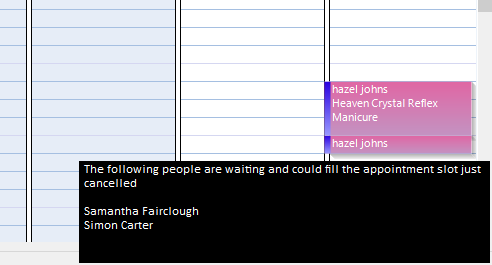

The waiting list option allows staff to add customers to a waiting list, if an appointment slot
should become available then an alert will be shown.
You can manually activate the waiting list by clicking the waiting list button (left) or
double clicking the “Waiting List” item in the status bar.
Availability
Whenever an appointment is cancelled, the POS will look through the waiting list and determine
if any customers on the waiting list could fill the vacant time slot. If a customer could fill the
vacant time slot then a notification will appear in the bottom right corner of the screen.

The notification will appear for about 45 seconds and if clicked the Waiting List will be shown.